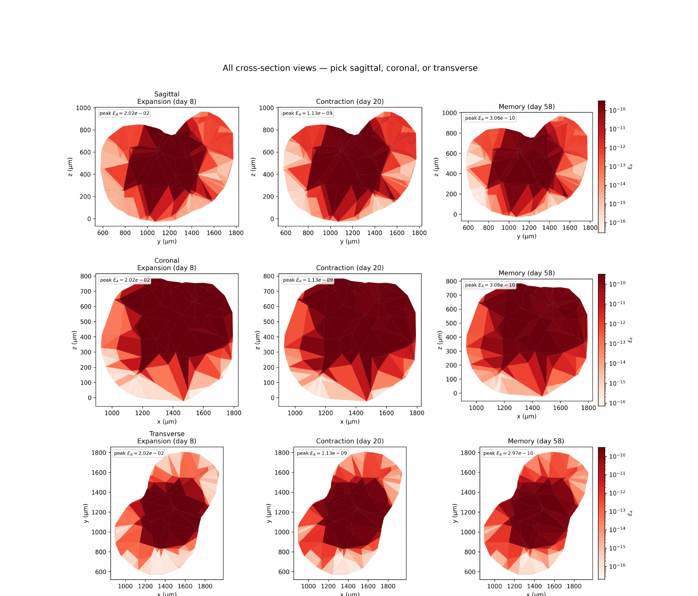

CURRENT RESEARCH · 2024–PRESENT
Computational Immunology
Spatial Antigen-Driven T-Cell Dynamics
University of Delaware - Prof. Ryan Zurakowski
Developed a finite-volume model on a reconstructed 3D murine lymph-node mesh to study how spatial antigen exposure shapes activated and memory T-cell dynamics. The current implementation treats antigen as a transported state concentrated near high endothelial venules and calibrates the response against longitudinal LCMV data.
12fitted parameters
16LCMV time points
200bootstrap fits
MATLAB
Finite Volume
3D Meshes
Uncertainty Quantification